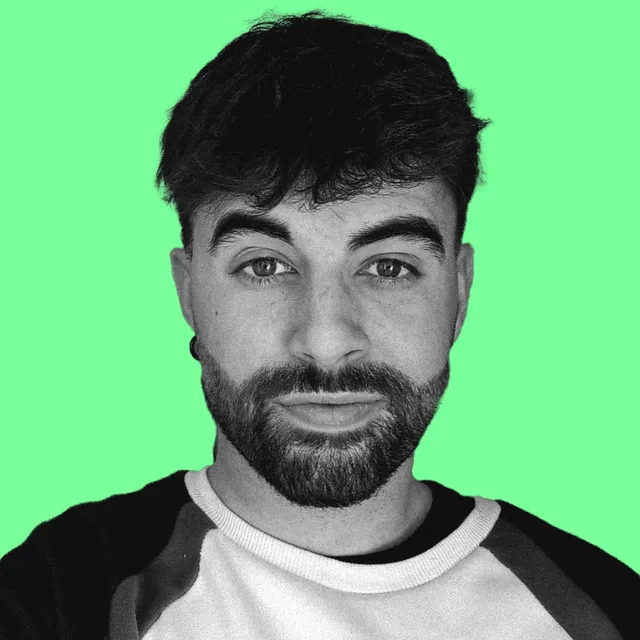

Tools and Frameworks
In my research, I use several powerful tools and frameworks to develop deep learning models:
Developing cutting-edge AI solutions for improved diagnosis and treatment
Learn MoreBridging the gap between artificial intelligence and clinical practice
View ResearchCreating next-generation tools for medical professionals
Get In Touch
I am a researcher specializing in Deep Learning applied to medical imaging, focused on developing and applying advanced machine learning algorithms to enhance the diagnosis and treatment of medical conditions through comprehensive image analysis. My work revolves around utilizing artificial intelligence to detect patterns, segment medical images, and support decision-making in clinical environments.
I am passionate about leveraging state-of-the-art techniques like convolutional neural networks (CNNs), transformer architectures, and generative models to push the boundaries of what is possible in medical imaging. With a strong background in both computer science and medical applications, I aim to bridge the gap between technology and healthcare, ultimately contributing to more accurate and efficient diagnostic tools.
I enjoy collaborating with other researchers and healthcare professionals to bring innovative solutions to real-world medical challenges, ensuring that my research has a meaningful impact on patient outcomes and healthcare systems.
Below are some selected publications showcasing my work:
In my research, I use several powerful tools and frameworks to develop deep learning models:
Feel free to reach out if you are interested in collaborating or discussing research opportunities: